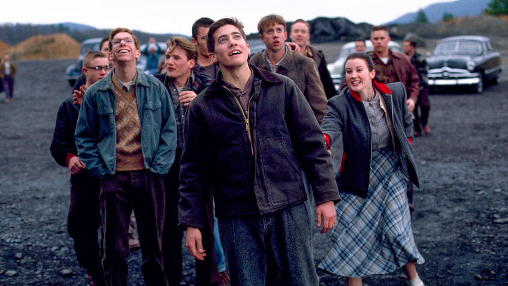
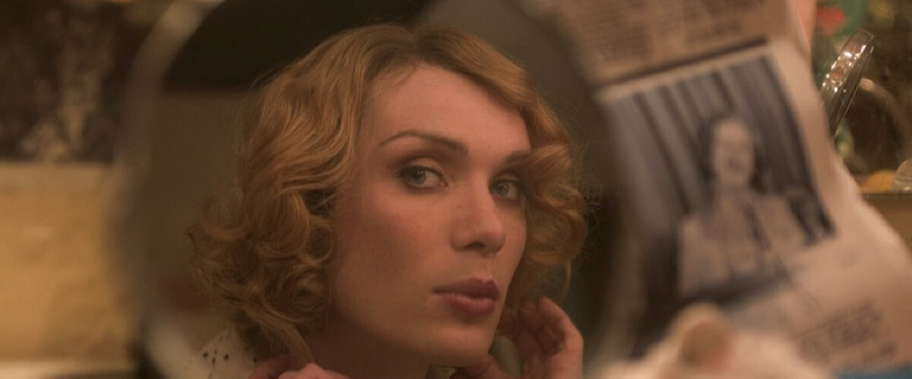
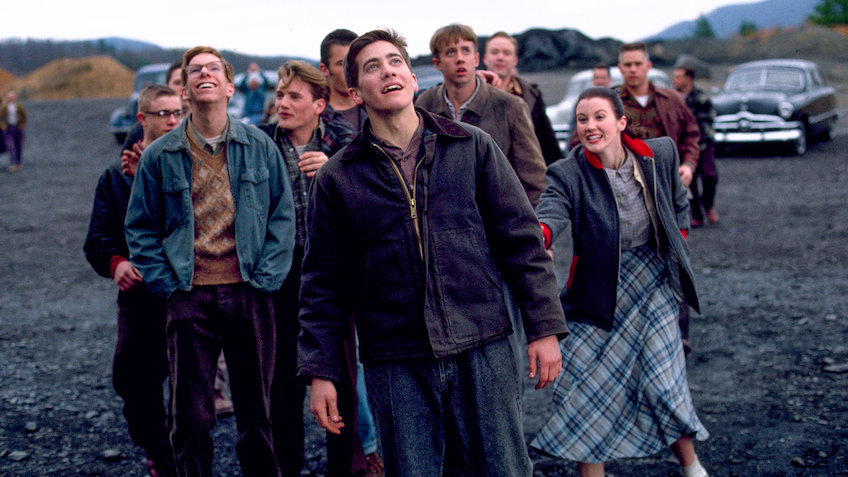
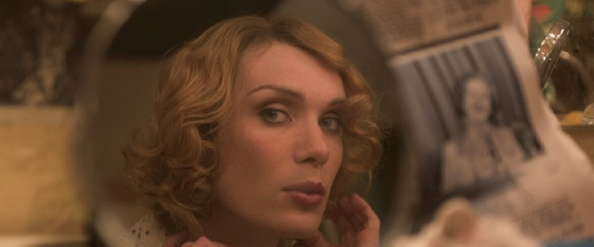

Arctic Monkeys are an English rock band formed in 2002 in High Green, a suburb of Sheffield, England. The band consists of Alex Turner (lead vocals, rhythm/lead guitar), Matt Helders (drums, vocals), Jamie Cook (lead/rhythm guitar) and Nick O'Malley (bass, backing vocals). Former band member Andy Nicholson (bass guitar, backing vocals) left the band in 2006 shortly after their debut album was released. Their sound has changed extensively from album to album with the only constant being the clever rics of frontman Alex Turner. All four members of the band were devoted fans of hip-hop when they were younger. For some members, like Alex Turner and Matt Helders, things changed when they heard certain bands.


 


